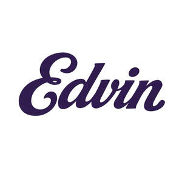

Trade Mark Journal No.2025/033 15 August 2025
UK00004246055 7 August 2025 (8,21,28)

- Class 8
- Kitchen knives; Kitchen mandolines; Cutlery, kitchen knives, and cutting implements for kitchen use; Thin-bladed kitchen knives; Scissors for kitchen use; Japanese chopping kitchen knives; Fish slicing kitchen knives; Lifting tools; Extensions for hand tools; Hand-operated cutting tools; Hex tools; Rammers being hand tools; Bits for hand-operated tools; Bits being hand tools; Hand taps; Hand saws; Hand pumps; Hand jacks; Hand hooks; Hand drills; Taps being hand tools; Hand drills, hand-operated; Stands for hand jacks; Frames for hand saws; Pickhammers; Drawknives; Jig-saws; Fruit segmenters.
- Class 21
- Kitchen utensils; Household or kitchen utensils; Kitchen graters; Kitchen jars; Kitchen containers; Kitchen mitts; Kitchen sponges; Kitchen sieves; Kitchen utensils of silicon; Kitchen moulds; Household or kitchen containers; Spatulas for kitchen use; Graters for kitchen use; Ceramics for kitchen use; Pestles for kitchen use; Kitchen mixers, non-electric; Kitchen paper racks; Turners for kitchen use; Containers for household or kitchen use; Kitchen paper dispensers; Kitchen grinders, non-electric; Toilet and bathroom cleaning utensils ; Kitchen boards for chopping; Crushers for kitchen use, non-electric; Mortars for kitchen use; Cooking utensils; Basting spoons, for kitchen use; Batter dispensers for kitchen use; Funnels for kitchen use; Cooking pots for use in microwave ovens; Cutting boards for the kitchen; Kitchen cutting boards; Chopping boards for kitchen use; Pet grooming glove; Litter trays for pet animals; Pet paw cleaners, non-electric; Food containers for pet animals; Animal-activated pet feeders; Pet lick mats; Pet feeding dishes; Pet feeding bowls; Electronic pet feeders; Cages for pets; Pet treat jars; Cages for household pets; Automatic pet feeders; Deshedding brushes for pets; Pet feeding and drinking bowls; Deshedding combs for pets; De-shedding combs for pets; Pet feeding bowls, automatic; Brushes for pets; Household containers for storing pet food; Litter trays for pets; Epergnes; Bootjacks; Epergnes, not of precious metal; Indoor aquariums; Indoor terrariums; Portable cooking kits for outdoor use; Indoor aquaria; Indoor terraria; Indoor insect vivaria; Indoor insect habitats; Indoor terrariums for plants; Indoor insect vivariums; Indoor terrariums for insects; Camping grills; Plastic bottles; Plastic cups; Plastic buckets; Plastic plates; Tablemats of plastic; Planters of plastic; Plastic coasters; Cups of paper or plastic; Plastic funnels; Plastic water bottles; Food mashers; Food basters; Containers for bird food.
- Class 28
- Softball home plates; Home video game machines; Doll house furnishings; Portable home gymnastic apparatus; Doll house furniture; Hand paddles; Hand puppets; Toy hand tools; Exercise hand grippers; Hand grip strengthener rings; Toys; Toys, games, and playthings; Toys and playthings for pets; Ride-on toys; Cuddly toys; Toys for sandpits; Stuffed toys; Plush toys; Inflatable toys; Radio-controlled toys; Plastic toys; Crib toys; Toys for animals; Toys, games and playthings for pet animals; Windup toys; Wooden toys; Toys and playthings for pet animals; Toy dolls; Educational toys; Bendable toys; Bath toys; Infant toys; Dog toys; Sandbox toys; Bathtub toys; Inflatable ride-on toys; Controllers for toys; Soft toys; Bouncing toys; Toy figurines; Toy furniture; Toys for birds; Mechanical toys; Clockwork toys; Developmental toys; Rocking toys; Stacking toys; Fabric toys; Plastic models being toys; Water toys; Modular toys; Drawing toys; Toy prams; Action toys; Stuffed and plush toys; Stuffed plush toys; Plush stuffed toys; Battery-operated action toys; Sketching toys; Children's toys; Smart toys; Whistling toys; Toy tableware; Plastic character toys; Construction toys; Push toys; Articles of clothing for toys; Toy wheelbarrows; Squeeze toys; Toy bakeware and toy cookware; Talking toys; Bendy balls being toys; Toy xylophones; Toy mobiles; Toy cars; Toy strollers; Water-squirting toys; Toys for pet animals; Assembly toys; Toy balloons; Toy scooters; Toy hats; Toy cookware; Toy harmonicas; Toy automobiles; Toy robots; Smart plush toys; Toy tools; Toy weapons; Toy glockenspiels; Inflatable pool toys; Costumes being childrens playthings; Toy bakeware; Toy pushchairs; Toy balls; Toy airplanes; Video game joysticks; Bingo game playing equipment; Games; Arcade video game machines; Arcade games; Game boards for trading card games; Arcade game machines; Computer game consoles; Handheld game consoles; Billiard game playing equipment; Hand-held game consoles; Arcade video game machines with multi-terminals; Backgammon games; Coin-operated arcade video game machines; Joysticks for video game machines; Dice games; Joysticks being parts of video game consoles; Hockey games; Controllers for video game machines; Computer game apparatus; Video game machine cases; Role play games; Marbles for playing games; Hand-held consoles for playing video games; Video game machines for use with televisions; Role playing games; Card games; Token-operated video game machines; Coin-operated pinball game machines; Hand-held pinball games; Machines for playing games of skill or chance; Coin-operated games; Balls for games; Scratch cards for playing lottery games; Paddle ball games; Marbles for games; Toys for pets; Pet toys containing catnip; Pet toys made of rope; Toy dogs; Whack-a-mole toys for pets; Bob-sleighs; Monoskis; Pachinkos; Punchbags; Outdoor toys; Indoor play tents; Tables for indoor football; Indoor football tables; Swimming equipment; Inflatable games for swimming pools; Toy food.
EDVIN INNOVATIONS LIMITED